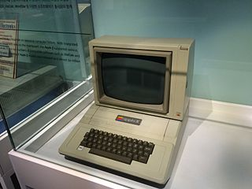
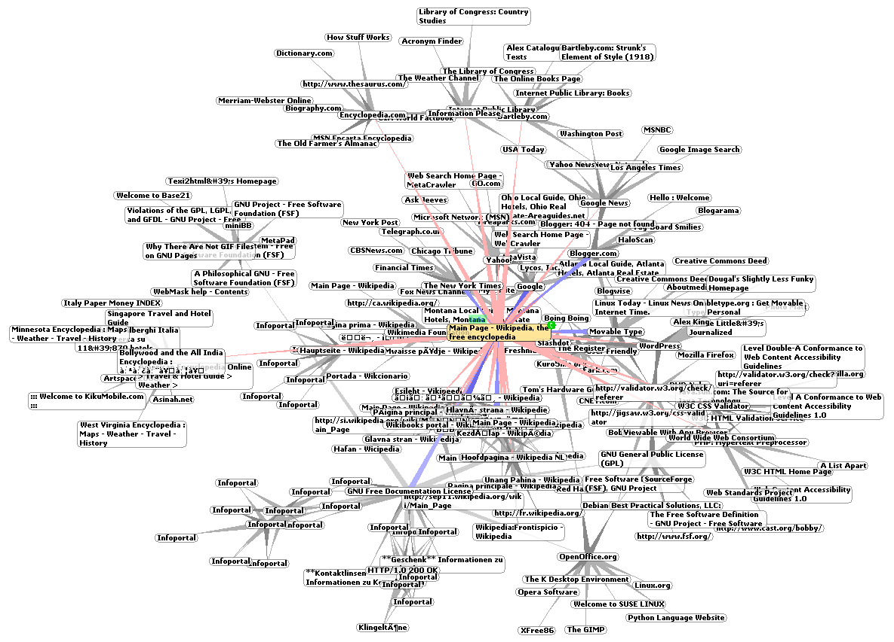

Der Z3 zuwrde von Konrad Zuse entwickelt. Er bestand aus einer Relais-Gleitkommaarithmetikeinheit (600 Relais) für Addition, Subtraktion, Multiplikation, Division, Quadratwurzel, Dezimal-Dual- und Dual-Dezimal-Umwandlung
Xerox Alto
1973
Der Xerox Alto ist die erste Workstation mit einer grafischen Benutzeroberfläche. Sie wurde im Jahr 1973 von dem Forschungszentrum Xerox PARC entwickelt.
Apple II
1977
Der Applle II wurde von Steve Jobs & SteveWozniak entwickelt. Er gehört zu den ersten 8-Bit-Mikrocomputern und hat zusätzlich 8 freie Steckplätze.

World Wide Web (www)
1989
Das WWW ist ein über das Internet abrufbares System von elektronischen Hypertext-Dokumenten. Es wurde von der Forschungseinrichtung CERN entwickelt

Fortran
1954
Es ist die älteste noch in weitem Gebrauch befindliche Programmierprache. 1954 entwickelte John W. Backus Fortran.